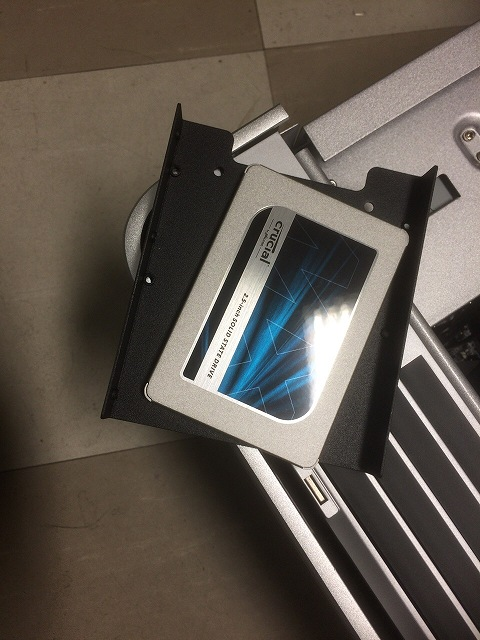
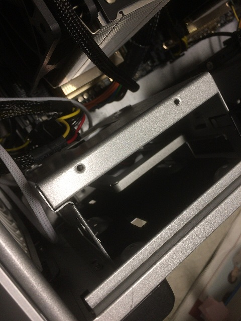
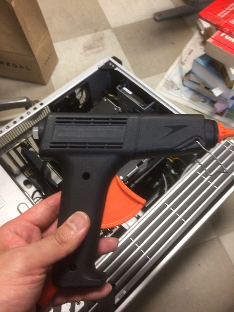
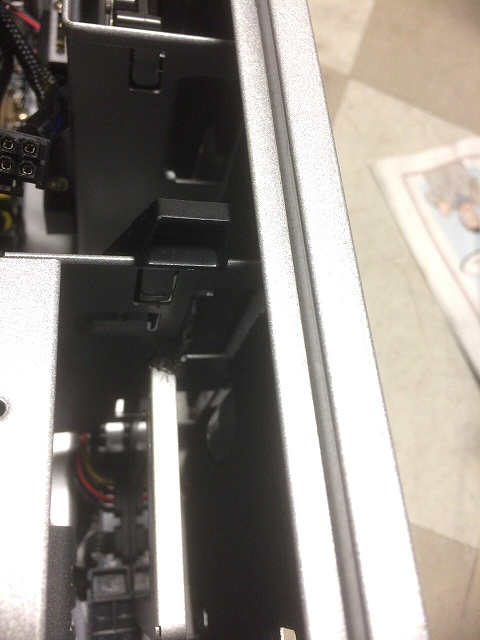
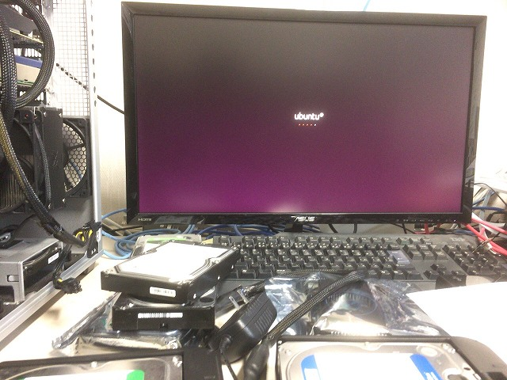
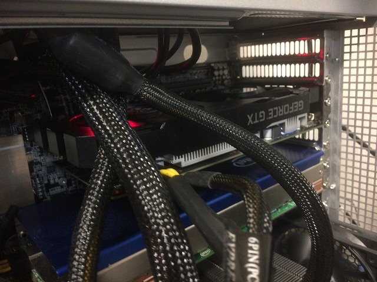
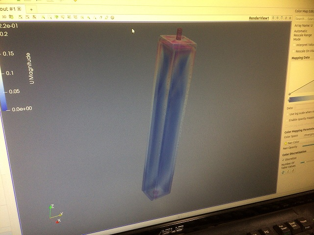
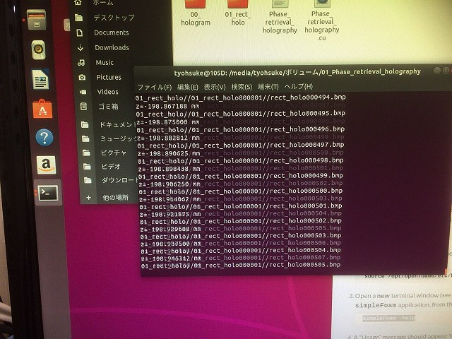

| ・ 計算サーバーセットアップ (R01.06.29) | |||
先日の交換で計算サーバーのGPUが交換されて，無事にログインループ発生． 半日ほど何周もして魂のレベルがあがっただけで起動せず．このループを断ち切るためにOSを16.04から18.04へバージョンアップ． GPUのドライバ更新のたびにシステムをいじるので，OSとデータをSSDとHDDに分けることにしました． |
|||
|

ガイドを用意したけど，コネクタ位置合わず |

直接挿すが，グラグラします | ||
|

そうだね，グルーガンだね |

よし！ | ||
|

輪廻から解脱．浄土門から聖道門へ |

配線はまた今度（結局2ヶ月後に直しました） | ||
|

OpenFOAMも動いたし |

ホログラム再生も100倍で動きました | ||